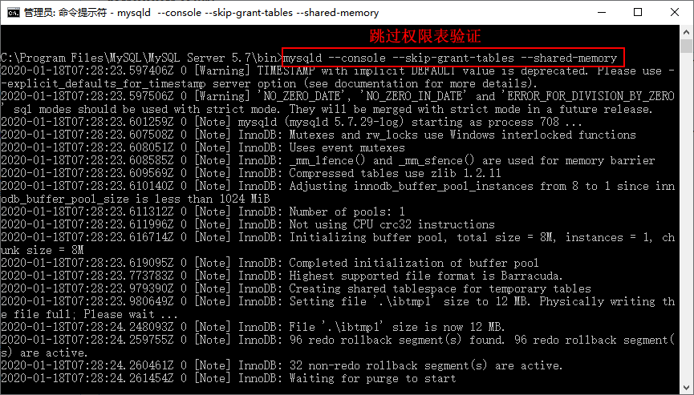
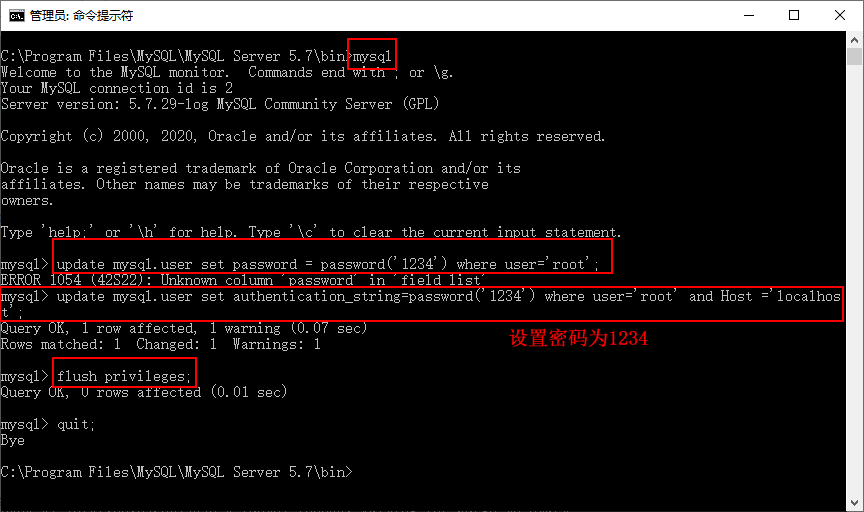
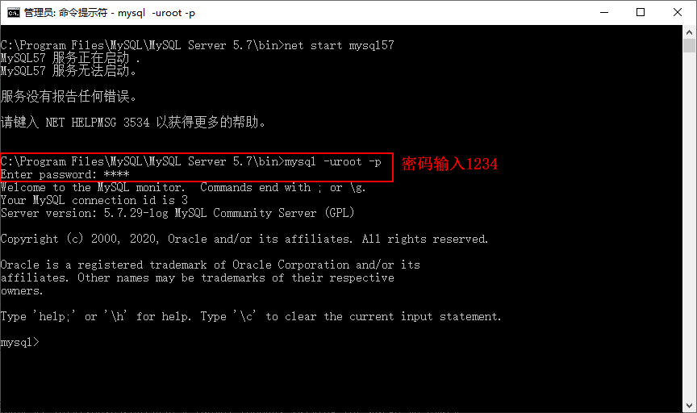

首页 > 编程笔记
MySQL忘记root密码解决方案
在忘记 MySQL 密码的情况下，可以通过 --skip-grant-tables 关闭服务器的认证，然后重置 root 的密码，具体操作步骤如下。
步骤 1)：关闭正在运行的 MySQL 服务。打开 cmd 进入 MySQL 的 bin 目录。
步骤 2)：输入
步骤 3)：上一个 DOS 窗口不要关闭，打开一个新的 DOS 窗口，此时仅输入 mysql 命令，不需要用户名和密码，即可连接到 MySQL。
步骤 4)：输入命令
注意：MySQL 5.7 版本中的 user 表里已经去掉了 password 字段，改为了 authentication_string。
步骤 5)：刷新权限（必须步骤），输入
步骤 6)：因为之前使用 --skip-grant-tables 启动，所以需要重启 MySQL 服务器去掉 --skip-grant-tables。输入无误后输入
步骤 7)：重启 MySQL 服务，使用用户名 root 和刚才设置的新密码 root 登录就可以了。
步骤 1)：关闭正在运行的 MySQL 服务。打开 cmd 进入 MySQL 的 bin 目录。
步骤 2)：输入
mysqld --console --skip-grant-tables --shared-memory 命令。–skip-grant-tables 会让 MySQL 服务器跳过验证步骤，允许所有用户以匿名的方式，无需做密码验证就可以直接登录 MySQL 服务器，并且拥有所有的操作权限。

步骤 3)：上一个 DOS 窗口不要关闭，打开一个新的 DOS 窗口，此时仅输入 mysql 命令，不需要用户名和密码，即可连接到 MySQL。
步骤 4)：输入命令
update mysql.user set authentication_string=password('root') where user='root' and Host ='localhost'; 设置新密码。注意：MySQL 5.7 版本中的 user 表里已经去掉了 password 字段，改为了 authentication_string。
步骤 5)：刷新权限（必须步骤），输入
flush privileges;命令。步骤 6)：因为之前使用 --skip-grant-tables 启动，所以需要重启 MySQL 服务器去掉 --skip-grant-tables。输入无误后输入
quit;命令退出 MySQL 服务。

步骤 7)：重启 MySQL 服务，使用用户名 root 和刚才设置的新密码 root 登录就可以了。

关注公众号「站长严长生」，在手机上阅读所有教程，随时随地都能学习。内含一款搜索神器，免费下载全网书籍和视频。

微信扫码关注公众号